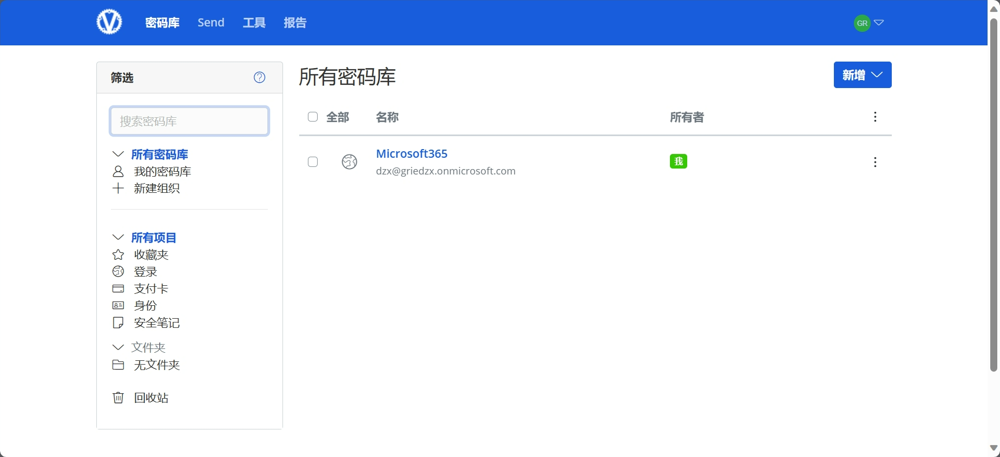

安装Docker和Nginx Proxy Manager
添加swap虚拟内存
VPS 的内存如果过小，建议设置一下 SWAP，一般为内存的 1-1.5 倍即可，可以让系统运行更流畅！
1
|
wget -O box.sh https://raw.githubusercontent.com/BlueSkyXN/SKY-BOX/main/box.sh && chmod +x box.sh && clear && ./box.sh
|
1
2
3
4
5
6
7
8
9
|
1. wget -O box.sh https://raw.githubusercontent.com/BlueSkyXN/SKY-BOX/main/box.sh： 使用wget工具从给定的URL下载一个文件，并将其保存为box.sh。-O box.sh参数指定了输出文件的名称。
2. chmod +x box.sh：这个命令改变了box.sh文件的权限，使其变为可执行。+x表示添加执行（x）权限。
3. clear：清空终端的屏幕
4. ./box.sh：这个命令执行了box.sh脚本。./表示当前目录，所以./box.sh就是执行当前目录下的box.sh文件。
5. 使用&&连接，当且仅当前一个命令成功执行后才执行后面的命令
|
输入数字18，选择设置SWAP
设置swap数值，并使用 free -h查看内存设置情况
升级packages
因为密码管理器是我新服务器下第一个项目，先升级安装常用的软件
Debian或者Ubuntu都是基于Debian的linux发行版，常用apt作为包管理器
1
2
3
|
apt update -y
apt install wget curl sudo vim git -y
|
我因为手边有一本鸟叔的Linux工具书，选择了和书中一致的CentOS,应该使用yum或者dnf作为包管理器
1
2
3
|
yum update -y
yum install wget curl sudo vim git -y
|
安装Docker环境
安装Docker (境外VPS)
1
|
wget -qO- get.docker.com | bash
|
-q 下载过程中静默下载，不输出下载信息
-O- 下载内容输出值stdout,直接给后面bash命令执行
1
|
docker -v #查看docker版本，判断是否安装成功
|
1
|
systemctl enable docker #设置成开机自启动
|
安装docker-compose
Linux 上我们可以从 Github 上下载它的二进制包来使用，最新发行的版本地址：https://github.com/docker/compose/releases
运行以下命令以下载 Docker Compose 的当前稳定版本：(尝试v2.2.2没有报错，最新版v2.4报错)
1
|
sudo curl -L "https://github.com/docker/compose/releases/download/v2.2.2/docker-compose-$(uname -s)-$(uname -m)" -o /usr/local/bin/docker-compose
|
将可执行权限应用于二进制文件：
1
|
sudo chmod +x /usr/local/bin/docker-compose
|
创建软链：（/usr/bin通常在系统的PATH环境变量中，使 docker-compose可以全局运行）
1
|
sudo ln -s /usr/local/bin/docker-compose /usr/bin/docker-compose
|
测试是否安装成功：
1
2
|
[root@dzx bin]# docker-compose version
Docker Compose version v2.2.2
|
修改Docker配置
- 增加一段自定义内网 IPv6 地址
- 开启容器的 IPv6 功能
- 限制日志文件大小，防止 Docker 日志塞满硬盘
1
2
3
4
5
6
7
8
9
10
11
12
13
|
cat > /etc/docker/daemon.json <<EOF
{
"log-driver": "json-file",
"log-opts": {
"max-size": "20m",
"max-file": "3"
},
"ipv6": true,
"fixed-cidr-v6": "fd00:dead:beef:c0::/80",
"experimental":true,
"ip6tables":true
}
EOF
|
重启Docker服务:systemctl restart docker
Nginx Proxy Manager
安装Nginx Proxy Manager
1
2
3
4
5
|
sudo -i
mkdir -p /root/data/docker_data/npm
cd /root/data/docker_data/npm
|
直接使用docker安装
1
2
3
4
5
6
7
8
9
10
11
12
13
14
|
cat > docker-compose.yml <<EOF
version: '3'
services:
app:
image: 'jc21/nginx-proxy-manager:latest'
restart: unless-stopped
ports:
- '80:80' # 保持默认即可，不建议修改左侧的80
- '81:81' # 冒号左边可以改成自己服务器未被占用的端口
- '443:443' # 保持默认即可，不建议修改左侧的443
volumes:
- ./data:/data # 冒号左边可以改路径，现在是表示把数据存放在在当前文件夹下的 data 文件夹中
- ./letsencrypt:/etc/letsencrypt # 冒号左边可以改路径，现在是表示把数据存放在在当前文件夹下的 letsencrypt 文件夹中
EOF
|
运行访问Nginx Proxy Manage
直接 http://ip:81 访问，我这里就是 http://20.222.58.183:81/
不知道服务器 IP，可以直接在命令行输入：`curl ip.sb`，会显示当前服务器的 IP
创建vaultwarden安装目录
1
2
3
4
5
6
7
|
sudo -i
mkdir -p /root/data/docker_data/vaultwarden
cd /root/data/docker_data/vaultwarden
vim docker-compose.yml
|
写入以下设置
1
2
3
4
5
6
7
8
9
10
11
12
13
14
15
16
17
18
19
20
21
22
23
|
version: '3'
services:
vaultwarden:
container_name: vaultwarden
image: vaultwarden/server:latest
restart: unless-stopped
volumes:
- ./data/:/data/
ports:
- 8080:80
environment:
- DOMAIN=https://subdomain.yourdomain.com # 这是您希望与您的Vaultwarden实例关联的域名。
- LOGIN_RATELIMIT_MAX_BURST=10 # 允许在一阵登录/两步验证尝试中的最大请求次数。
- LOGIN_RATELIMIT_SECONDS=60 # 这是来自同一IP的登录请求之间的平均秒数，在Vaultwarden限制登录次数之前。
- ADMIN_RATELIMIT_MAX_BURST=10 # 这与LOGIN_RATELIMIT_MAX_BURST相同，只争对admin面板。
- ADMIN_RATELIMIT_SECONDS=60 # 这与LOGIN_RATELIMIT_SECONDS相同
- ADMIN_SESSION_LIFETIME=20 # 会话持续时间
- ADMIN_TOKEN=YourReallyStrongAdminTokenHere # 此值是Vaultwarden管理员面板的令牌（一种密码）。为了安全起见，这应该是一个长的随机字符串。如果未设置此值，则管理员面板将被禁用。建议openssl rand -base64 48 生成ADMIN_TOKEN确保安全
- SENDS_ALLOWED=true # 此设置决定是否允许用户创建Bitwarden发送 - 一种凭证共享形式。
- EMERGENCY_ACCESS_ALLOWED=true # 此设置控制用户是否可以启用紧急访问其账户的权限。例如，这样做可以在用户去世后，配偶可以访问密码库以获取账户凭证。可能的值：true / false。
- WEB_VAULT_ENABLED=true # 此设置决定了网络保险库是否可访问。一旦您配置了您的账户和客户端，停止您的容器，然后将此值切换为false并重启Vaultwarden，可以用来防止未授权访问。可能的值：true/false。
- SIGNUPS_ALLOWED=true # 此设置控制新用户是否可以在没有邀请的情况下注册账户。可能的值：true / false。
|

CSDN markdown 格式博文，插入图片空行太大_为什么markdown中插入图片前后有很大空间空格-CSDN博客